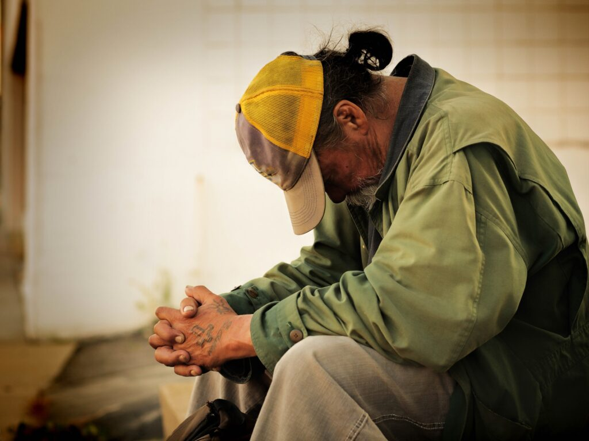
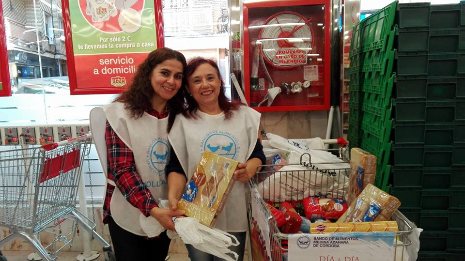

Creyendo que todo es posible
Únete a nosotros.
Nuestra misión
Como ONG cristiana ser sensible a las necesidades de personas y colectivos que conforman la sociedad, desarrollando acciones que contribuyan a su transformación y restauración integral, indistintamente de su origen, condición o pensamiento.

La visión.
Aspiramos a que familias y personas sean transformadas hasta alcanzar su pleno desarrollo y dignidad, desde una perspectiva cristiana.
Los valores
En la última década, la sociedad en general ha experimentado cambios profundos y a una velocidad vertiginosa, propiciando que constantemente nos estemos enfrentando a un entorno cambiante que exige más responsabilidad y profesionalidad porque la sociedad demanda más información y transparencia para implicarse.
Un proyecto social ya no se percibe solamente por los resultados en cuanto a sus fines, sino también por el conjunto de valores y percepciones que proyecte sobre la sociedad. Nuestra cultura de compromiso y cercanía es nuestro activo más importante.
- Interés por las personas
- Pasión
- Trabajo en red y en equipo
- Integridad
- Derechos humanos
- Esperanza amor
- Comprometidos con la comunidad
